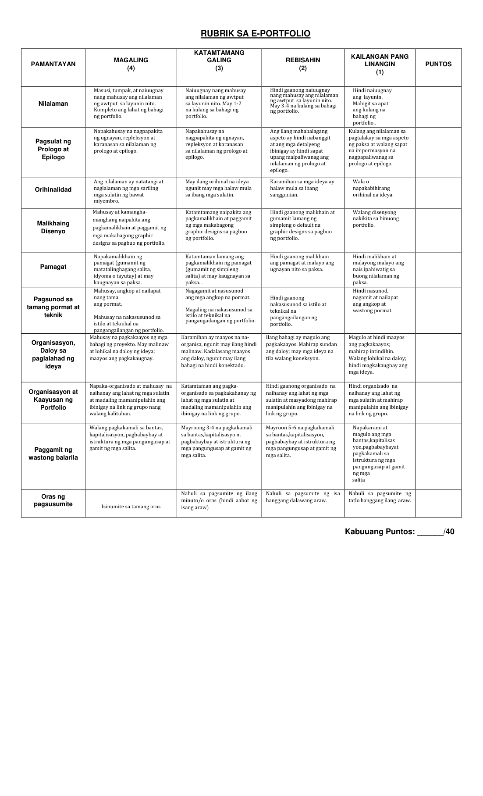

XAVIER UNIVERSITY SENIOR HIGH SCHOOL · FIL 201
Isang kalipunan ng mga akdang akademiko
Sulyap.
Pagbabalik-Tanaw sa mga Pahinang Bumuo sa Aming Paglalakbay sa FIL 201
Ang Aming E-Portfolio
Mga Miyembro ng Pangkat
- Andre Clyde Eduardo C. Acta
- Savannah Jill Delos Santos Cabasag
- Odra Mischa P. Chua
- Kean Emmanuel T. Escalera
- Hanney Carlle P. Lapure
- Rayette Clarimond B. Macalindol
- Ameer Jacob D. Macud
- Hairah B. Montay
- Kian Lawrence J. Mutya
- Franchesca Margarette J. Payor
- Carille Pepito
- Gabriel Enrique C. Reyes
- Yesha Ezra A. See
- Joel L. Sumampong Jr.
- Aldrean Heart O. Tan
Prologo
May mga pahinang tila payak lamang sa unang tingin, ngunit kapag muling binasa, matutuklasang taglay pala ng mga ito ang mga kuwentong naging bahagi ng ating paglago. Para sa grupo, bawat pahina ay bakas ng kahapon, ngunit bawat aral ay gabay sa bukas. Ito ang naging inspirasyon nila sa pagbuo ng portfolio na ito. Sa bawat salita, gawain, at karanasang kanilang pinagsama-sama, nasasalamin ang mga hamong kanilang hinarap, mga kaalamang kanilang natutuhan, at mga pagbabagong kanilang pinagdaanan bilang mga mag-aaral. Higit sa pagiging isang kalipunan lamang ng mga natapos na gawain, ang portfolio na ito ay nagsisilbing salamin ng kanilang pagkatuto at pag-unlad sa asignaturang FIL 201.
Ang napiling pamagat ng e-portfolio ay “Sulyap: Pagbabalik-Tanaw sa mga Pahinang Bumuo sa Aming Paglalakbay sa FIL 201.” Pinili ng grupo ang salitang sulyap sapagkat sumasagisag ito sa muling pagtingin sa mga gawain, aralin, at karanasang naging mahalagang bahagi ng kanilang pag-aaral. Sa bawat pahina ay makikita hindi lamang ang mga gawaing kanilang natapos, kundi pati ang unti-unting paglawak ng kanilang kaalaman at paghubog sa kanilang mga kasanayan. Makikita rin dito ang mga hamon, pagkakamali, tagumpay, at mahahalagang sandaling kanilang pinagsaluhan sa buong semestre. Sa ganitong paraan, ang pamagat na Sulyap ay kumakatawan sa pagbabalik-tanaw at pagpapahalaga sa mga karanasang humubog sa kanilang pagkatuto sa FIL 201.
Sa pagbuo ng e-portfolio na ito, hindi lamang muling natipon ng grupo ang kanilang mga output, kundi nakita rin nila ang proseso at pagsisikap na nakapaloob sa bawat isa. Sa simula, maaaring itinuring lamang nila ang ilan sa mga gawain bilang mga kinakailangang matapos, ngunit habang lumilipas ang semestre, unti-unti nilang naunawaan ang halaga ng bawat aktibidad sa pagpapalawak ng kanilang kaalaman at pagpapahusay ng kanilang kakayahan sa akademikong pagsulat. Ang mga hamong kanilang naranasan ay nagturo sa kanila na maging mas responsable, malikhain, masinop, at bukas sa mga puna at pagbabago. Naging mahalaga rin ang pagtutulungan at pagbabahagi ng mga ideya dahil ipinakita nitong hindi lamang indibidwal na pagsisikap ang bumubuo sa isang matagumpay na gawain. Dahil dito, ang bawat pahina ay hindi lamang patunay ng kanilang mga natapos na gawain, kindi larawan din ng proseso ng pagkatuto at pag-unlad na kanilang naranasan bilang isang grupo.
Taos-pusong iniaalay ng grupo ang e-portfolio na ito sa lahat ng naging bahagi ng kanilang karanasan sa FIL 201. Lubos nilang pinasasalamatan ang kanilang guro sa matiyagang paggabay at pagbabahagi ng kaalaman, ang bawat miyembro ng grupo sa kanilang pagsisikap at pakikipagtulungan, at ang kanilang mga pamilya at kaklase sa patulog na suporta. Ang bawat pahina ng portfolio na ito ay bunga ng sama-samang pagsisikap, mga aral na natutuhan, at mga karanasang kanilang pinagsaluhan. Sa pagtatapos ng asignaturang ito, dala nila hindi lamang ang mga gawaing kanilang natapos, kundi pati ang mga kaalaman, kasanayan, at alaala na maari nilang dalhin sa mga susunod pang yugto ng kanilang pag-aaral. suporta. Ang bawat pahina rito ay patunay ng aming samahan at pagkatuto, at nag-iiwan kami ng malalim na pasasalamat sa lahat ng naging bahagi ng makabuluhang karanasang ito.
Talaan ng Nilalaman
Mga Sulatin
Bawat scaffold ay may sariling pahina.
Pagsusuri ng mga Teksto
Basahin ang akademikong sulatin sa sariling pahina.
Basahin →SCAFFOLD 2.1Replektibong Sanaysay
Basahin ang akademikong sulatin sa sariling pahina.
Basahin →SCAFFOLD 2.2Lakbay Sanaysay
Basahin ang akademikong sulatin sa sariling pahina.
Basahin →SCAFFOLD 3.1Bionote
Basahin ang akademikong sulatin sa sariling pahina.
Basahin →SCAFFOLD 3.2Panukalang Proyekto
Basahin ang akademikong sulatin sa sariling pahina.
Basahin →Epilogo
Noong una, inakala ng grupo na ang mga gawain sa asignaturang FIL 201 ay isa lamang sa mga responsibilidad na kailangan nilang matapos. Ngunit habang nagpapatuloy ang kanilang paglalakbay, unti-unti nilang nakita ang mas malalim na kahulugan ng bawat gawain. Sa pamamagitan ng sama-samang pagsisikap, pagbabahagi ng mga ideya, at pagbuo ng iba’t ibang paksa, natutuhan nilang lumampas sa simpleng paghahanap ng tamang sagot. Hinamon sila ng bawat gawain na maging mas matiyaga, malikhain, at bukas sa pakikipagtulungan. Sa huli, ang mga gawaing minaan nilang itinuring na obligasyon ay naging mahalagang bahagi ng kanilang paglago at pagkilala sa kanilang mga kakayahan bilang mga mag-aaral.
Isa sa mga hindi malilimutang bahagi ng prosesong ito ang mga pagkakataong sama-samang bumuo at nagpalitan ng mga ideya ang mga miyembro para sa kanilang mga gawain. Hindi naging madali ang lahat, lalo na sa pag-aayos ng oras, paghahati ng mga responsibilidad, at paghaharap sa magkakaibang opinyon ng bawat isa. Sa halip na maging hadlang ang mga ito, natutuhan nilang ayusin ang mga hindi pagkakaunawaan sa pamamagitan ng maayos na komunikasyon, pakikinig sa isa’t isa, at patas na paghahati ng mga gawain. Dahil dito, hindi lamang nila natapos ang kanilang mga output, kundi nahasa rin ang kanilang kakayahang makipag-usap, mamahala ng oras, mag-isip nang mas malalim, at makipagtulungan bilang isang grupo.
Sa bawat gawaing isinagawa, napagtanto ng grupo na ang pagkatuto ay hindi lamang nasusukat sa pagkakaroon ng tamang sagot. Mahalaga rin ang kakayahang magsuri, magsaliksik, magsulag, at maipahayag nang malinaw ang mga ideya. Bawat gawain ay naging pagkakataon upang mapalawak ang kanilang kaalaman at mapaunlad ang iba’t ibang kasanayang kailangan nila bilang mga mag-aaral. Natutuhan din nilang maging mas responsable sa kanilang mga tungkulin at mas bukas sa mga puna at mungkahing makatutulong sa pagpapabuti ng kanilang mga gawa. Higit sa lahat, nakita nilang ang mga aral at kasanayang kanilang natutuhan ay hindi lamang para sa loob ng silid-aralan, kundi maari rin nilang dalhin at gamitin sa mga susunod na yugto ng kanilang pag-aaral at buhay.
Sa pagtatapos ng e-portfolio na ito, malinaw na makikita ang pagbabagong pinagdaanan ng grupo mula sa mga unang gawain hanggang sa mga huling pahina nito. Sa kanilang pagbabalik-tanaw, nakita nila hindi lamang ang pag-unlad ng kanilang kakayahan sa pagsulat, pagsusuri, at pagpapahayag ng mga ideya, kundi pati na ring ang mga kahinaang kailangan pa nilang pagbutihin, tulad ng pamamahala ng oras, pagharap sa kaba, at pagkakaroon ng higit na tiwala sa sarili. Ang mga pagkukulang na ito ay hindi nila itinuring na katapusan ng kanilang pag-unlad, kundi mga bahagi ng paglalakbay na patuloy nilang pagsisikapang mapabuti. Sa bawat pahina ng e-portfolio ay makikita ang bakas ng kanilang pagsisikap, pagkakamali, pagkatuto, at pagbabago. Sa pagsasara ng huling pahina nito, hindi natayalos ang kanilang paglalakbay. Sa halip, dala nila ang mga aral at karanasang magsisilbing gabay sa mga susunod pang pahinang kanilang bubuuin.
Rubrik

Bionote at Curriculum Vitae
Mga orihinal na CV na nakalakip sa portfolio.